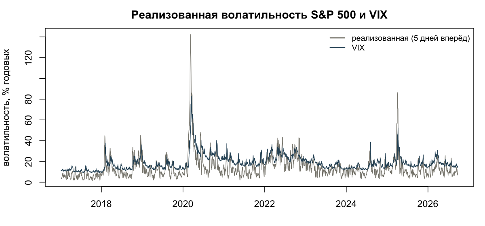
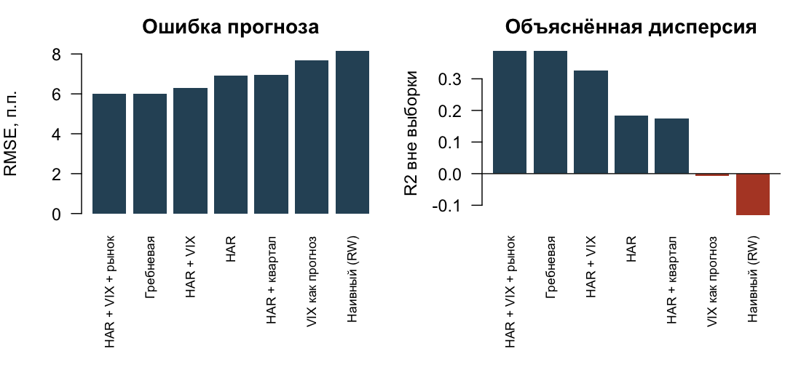
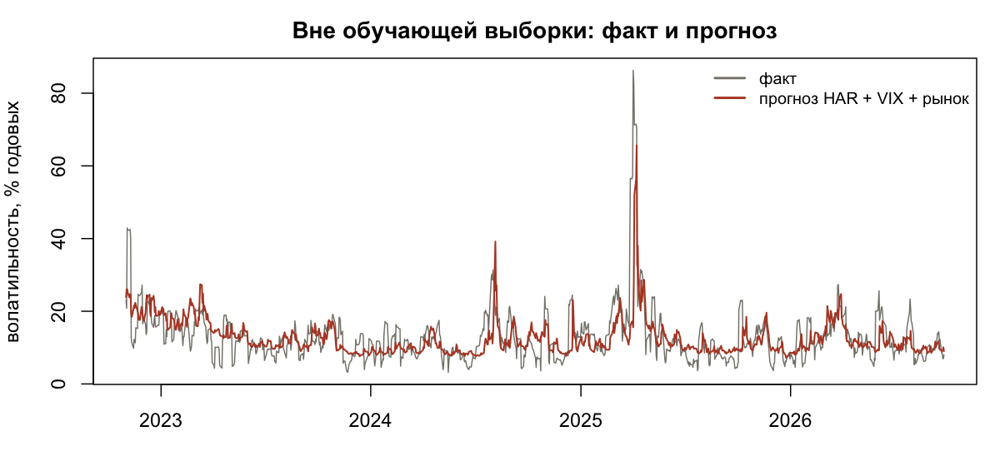
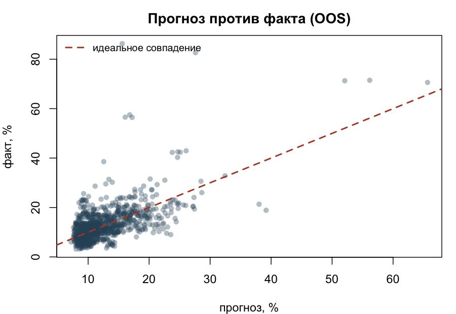
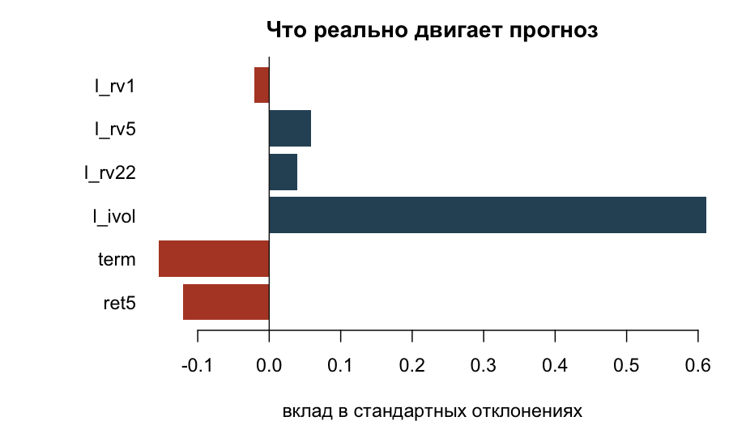
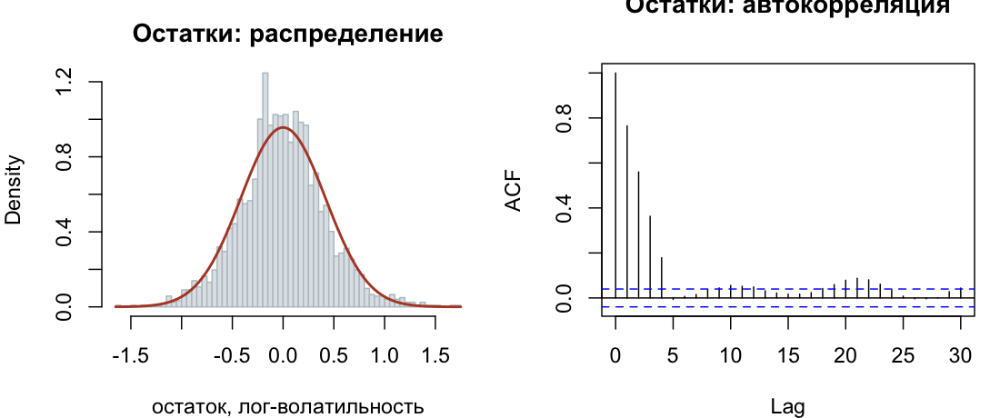

Ануар Беисов · данные FRED 2017–2026 · 2443 наблюдения · R, без сторонних пакетов
Классическая задача риск-аналитики: насколько сильно рынок будет колебаться в ближайшую неделю. От ответа зависят лимиты, маржа, VaR и размер позиции. Проверяем, может ли обычная линейная регрессия на правильно построенных признаках обыграть два очевидных ориентира — «будет как на прошлой неделе» и «рынок уже всё заложил в VIX».
Целевая переменная — реализованная волатильность на горизонте пяти торговых дней вперёд,
в годовом выражении: RV = sqrt(252/5 · Σ r²). Прогноз строится на момент t,
и в признаки попадает только то, что к этому моменту уже известно.
Данные — четыре ряда с FRED без ключей и регистрации: индекс S&P 500, VIX и доходности 10- и 2-летних казначейских облигаций. Панель после сборки: 2443 дня, с 6 января 2017 по 25 сентября 2026 года.

| Признак | Что это | Экономический смысл |
|---|---|---|
| rv1, rv5, rv22, rv66 | реализованная волатильность за 1, 5, 22 и 66 дней | каскад горизонтов модели HAR: день, неделя, месяц, квартал |
| VIX | подразумеваемая волатильность | ожидания рынка опционов |
| наклон кривой | ставка 10 лет минус 2 года | индикатор фазы цикла |
| доходность за 5 дней | сумма дневных доходностей | эффект рычага: падения поднимают волатильность |
Волатильность распределена логнормально, поэтому регрессия строится в логарифмах, а прогноз возвращается в уровни экспонентой.
Проверка идёт вперёд по времени, без подглядывания в будущее. Первые 60 % выборки используются только для обучения, дальше окно расширяется, модель переобучается каждый 21 торговый день. Между концом обучающей выборки и прогнозируемой датой оставлен разрыв в пять дней — иначе целевая переменная частично попала бы в обучение. Вне выборки остаётся 978 дней: с 1 ноября 2022 по 25 сентября 2026 года.
| Модель | RMSE | MAE | R² вне выборки | QLIKE |
|---|---|---|---|---|
| HAR + VIX + рынок | 6,00 п.п. | 3,76 п.п. | 0,388 | 0,344 |
| Гребневая регрессия | 6,00 п.п. | 3,77 п.п. | 0,388 | 0,339 |
| HAR + VIX | 6,30 п.п. | 3,88 п.п. | 0,325 | 0,405 |
| HAR | 6,93 п.п. | 4,28 п.п. | 0,183 | 0,491 |
| VIX как готовый прогноз | 7,69 п.п. | 6,09 п.п. | −0,006 | 0,417 |
| Наивный: как на прошлой неделе | 8,16 п.п. | 5,22 п.п. | −0,131 | 0,806 |

Преимущество над наивным прогнозом проверено тестом Диболда–Мариано с поправкой Ньюи–Уэста на перекрытие окон: для полной модели p = 0,005, для HAR + VIX p = 0,011, для чистого HAR p = 0,068, а для VIX самого по себе p = 0,50 — то есть VIX статистически не лучше наивного правила.



| Признак | Коэффициент | t-статистика |
|---|---|---|
| log VIX | 1,162 | 21,4 |
| наклон кривой доходности | −0,177 | −10,8 |
| доходность за 5 дней | −3,199 | −7,9 |
| log RV за 5 дней | 0,059 | 2,4 |
| log RV за 22 дня | 0,049 | 1,4 |
| log RV за 1 день | −0,010 | −1,3 |

Главный вывод для практики: линейная регрессия на горизонте недели объясняет около 40 % дисперсии волатильности и уверенно обыгрывает оба рыночных ориентира, но систематически срезает пики. Для лимитов и маржи этого достаточно, для стресс-тестов — нет, там нужен сценарный слой поверх модели.
Код, данные и инструкция по воспроизведению — в репозитории проекта, ссылка в карточке на сайте. Полный прогон занимает меньше минуты и требует только базового R.